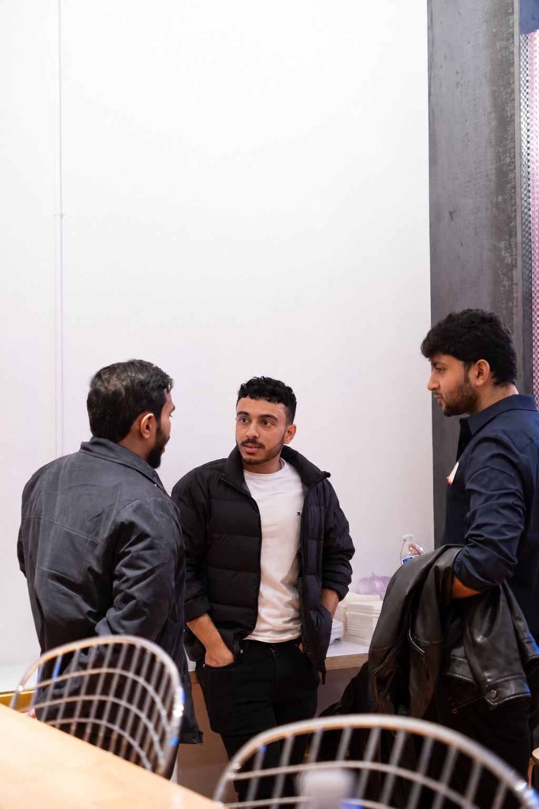
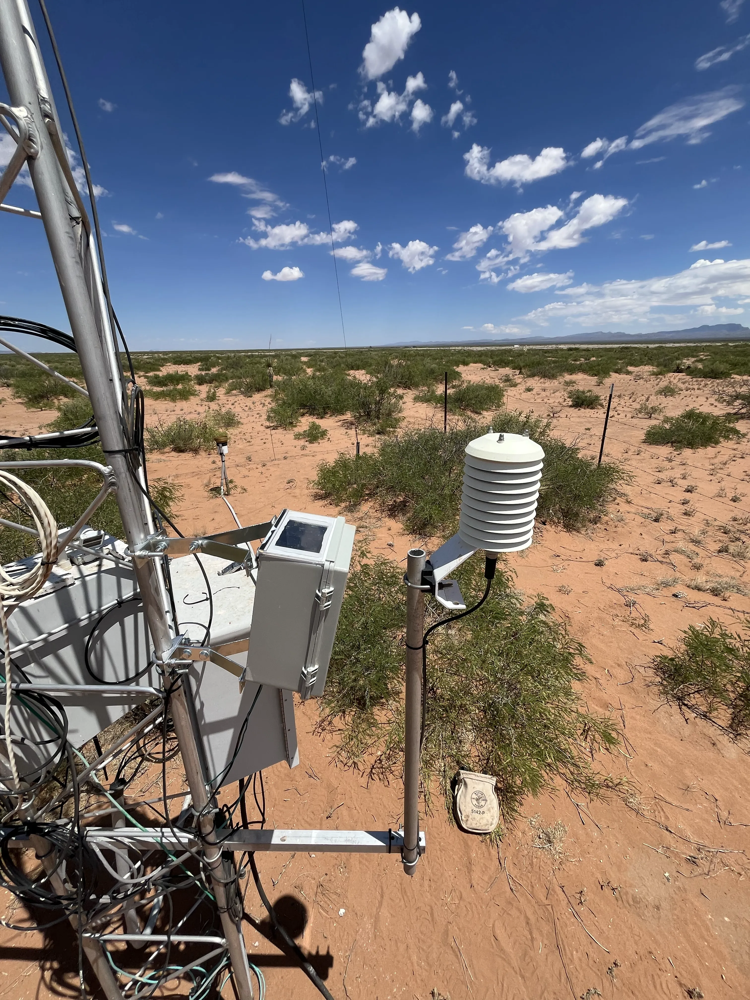
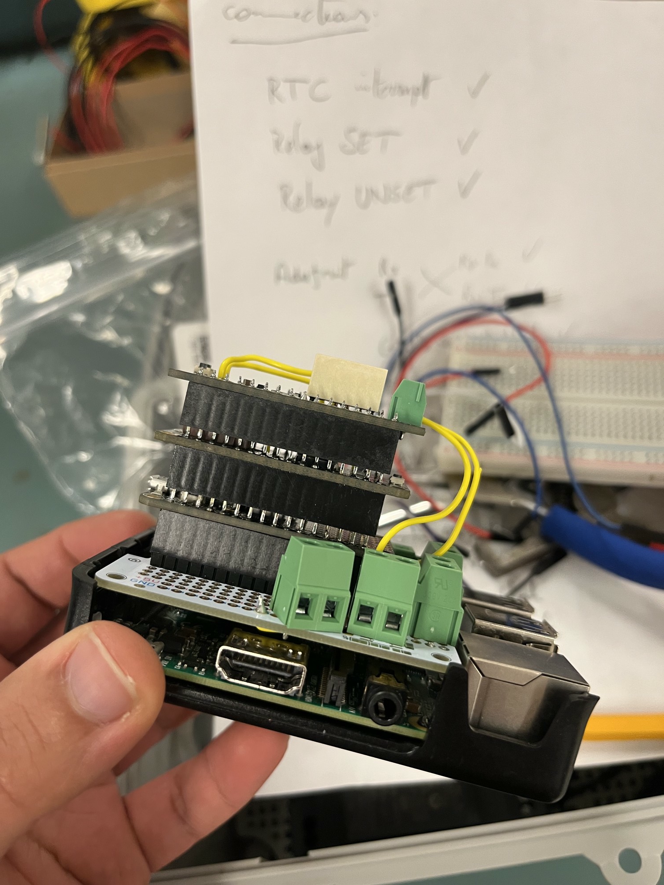
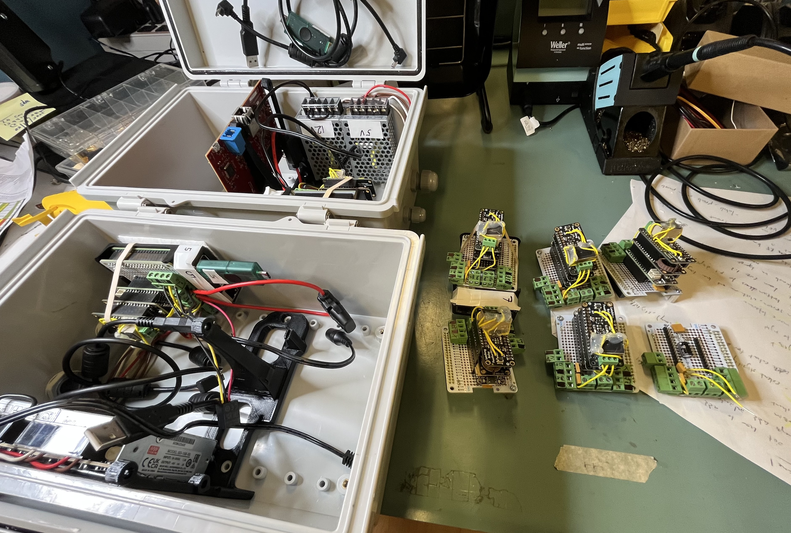
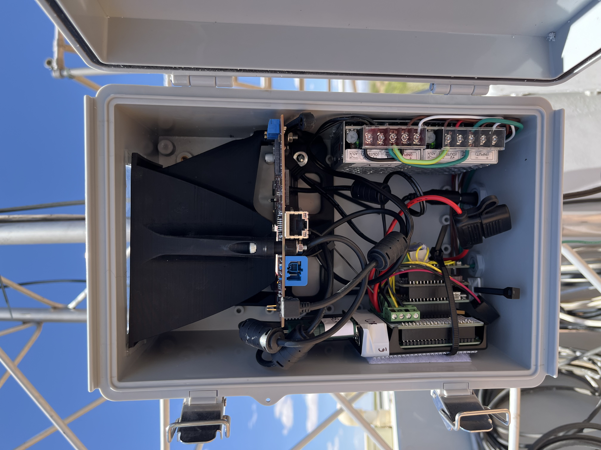
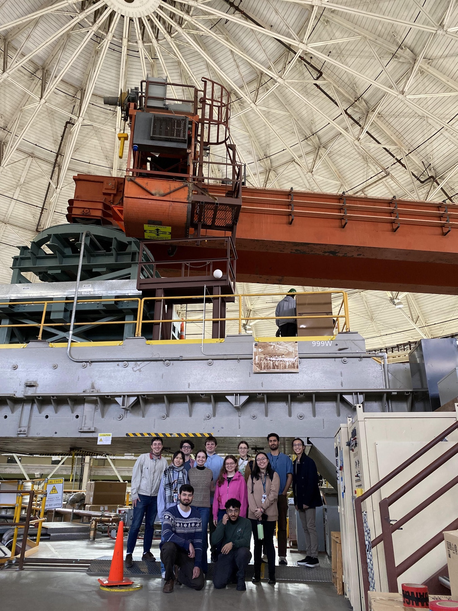
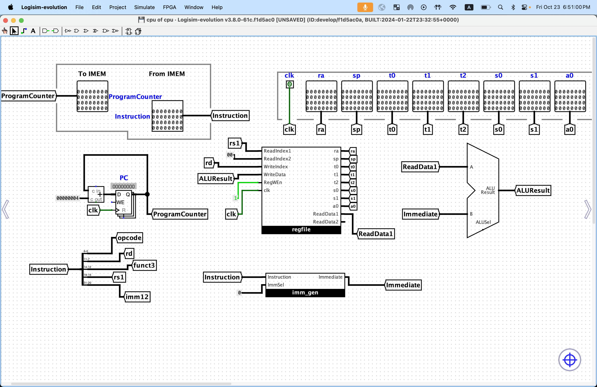

JAN 2026 — PRESENT
Undergraduate Research Assistant / Electrical Engineer Intern
Mentor: Stijn Wielandt
ELECTRICAL ENGINEERING & COMPUTER SCIENCE
PORTFOLIO — 2026Electrical Engineering & Computer Sciences
I work on electronics, embedded software, and radar research. Here you’ll find my projects and experience at Berkeley Lab, UC Berkeley, Bytes, and more.

MY PORTFOLIO
My research, startup experience, and engineering projects, with details on my contributions and the work behind them.
 Research · Embedded systems · Atmospheric sensing
Research · Embedded systems · Atmospheric sensing01 / LAWRENCE BERKELEY NATIONAL LABORATORY
I work on embedded control, signal processing, and hardware integration for atmospheric radar research.
Mentor: Stijn Wielandt

FIELD INSTRUMENTATION · JORNADA EXPERIMENTAL RANGEFEATURED RESEARCH PROJECT
Adapting TI mmWave radar for atmospheric measurements. I work on the control software, signal-processing pipeline, and electronics needed for unattended field collection.
Open the project to see hardware, code, testing, and results.




02 / PROJECTS
Selected work in digital design, analog electronics, and power electronics.
PCB DESIGN & FPGA ACQUISITION · IN PROGRESS
Developing a PC-connected oscilloscope with a team at UC Berkeley. I own the path from ADC acquisition through FPGA processing and USB transfer to the planned waveform display.

COMPUTER ARCHITECTURE · IN PROGRESS
Developing a 32-bit RISC-V processor in Logisim-evolution, from ALU and register-file design to CPU integration.
03 / COURSES
My coursework in electrical engineering and computer science.
EXPECTED MAY 2028
B.S. Electrical Engineering & Computer Sciences
GPA 4.0
Building on community-college coursework in engineering, programming, and physics.
SELECTED COURSEWORK
| Course | Institution |
|---|---|
| Computer Architecture | CS 61CUC Berkeley |
| Discrete Math & Probability | CS 70UC Berkeley |
| Signals, Dynamics & Information | EE 66UC Berkeley |
| Advanced PCB Engineering | APEUC Berkeley |
| Circuits | Completed in community college |
| Electromagnetics | Completed in community college |
| C/C++ Programming | Completed in community college |
| Data Structures | Completed in community college |
| Optics & Introduction to Quantum | Completed in community college |
04 / BYTES · MAY 2021 — APR 2025
Co-founder · Software, data infrastructure & automation
Bytes helps existing restaurants grow online orders by turning their menus into focused virtual brands on delivery platforms. I co-founded the company and built the data systems, automation, and internal tools behind that process.
less onboarding time with an AI menu generator
storefronts supported by centralized analytics
less audit time with automated reconciliation
fragmented data sources unified in PostgreSQL
 RADAR HARDWARE INTEGRATION.
RADAR HARDWARE INTEGRATION.
05 / ABOUT
I’m drawn to understanding technology from the fundamentals up: the physics behind a device, the properties of its materials, and the choices that shape what it can do. I enjoy tracing a complex system back to those foundations and understanding both its capabilities and its limits.
That curiosity carries into my work across hardware and software, from radar electronics to the code that controls them and processes their data. Through my EECS studies at UC Berkeley, research at Berkeley Lab, and experience building Bytes, I’m learning to connect that understanding with practical engineering. I’m especially interested in embedded systems, wireless/RF, and digital IC design.
Python · C/C++ · Bash · SQL
AWS · GCP · Pandas · NumPy
Raspberry Pi · Microcontrollers
Altium · LTspice
Digital IC · AI hardware infrastructure · Wireless / RF
Nuclear energy · Physics · Startups
Fitness & hiking
English & Arabic
RESUME, DESIGN & RESEARCH
06 / CONTACT
If you’re hiring for an internship or research role, or would like to know more about a project, I’d be glad to connect.
hashem@berkeley.edu ↗